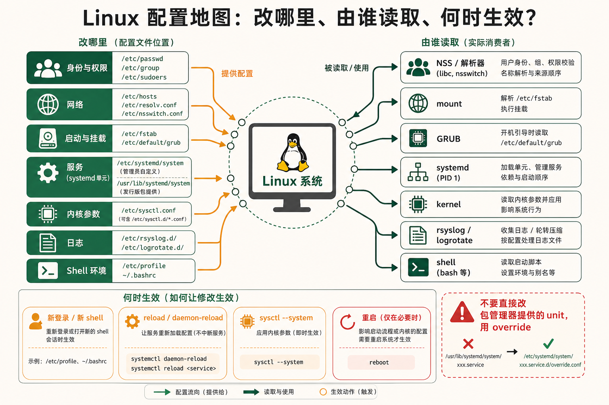
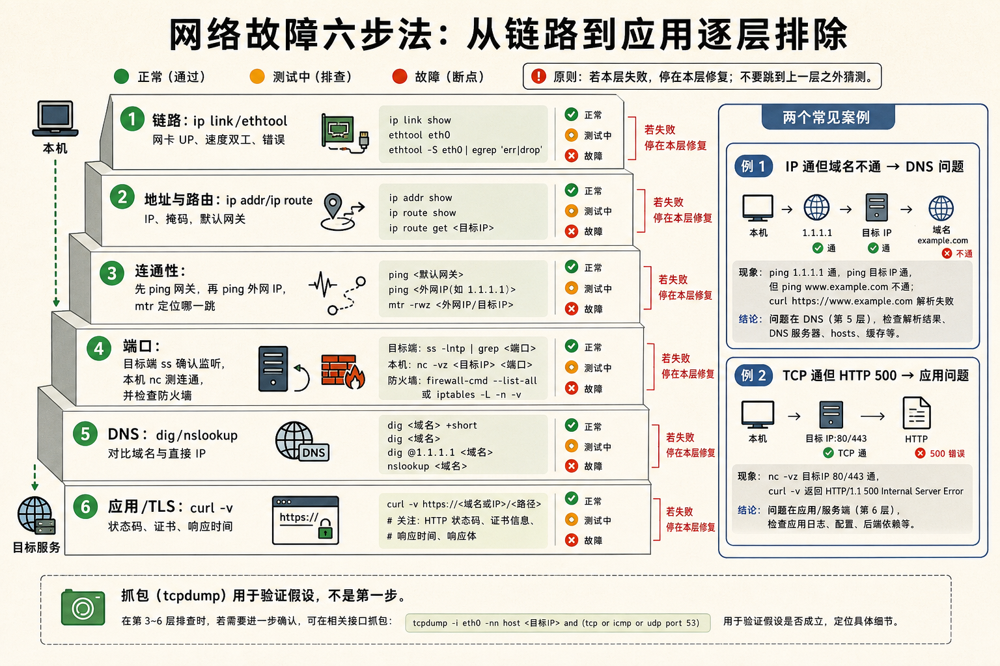
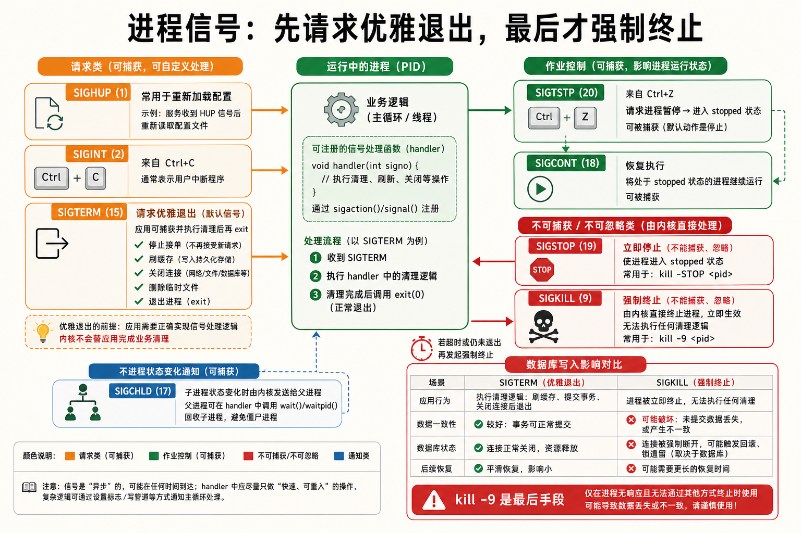
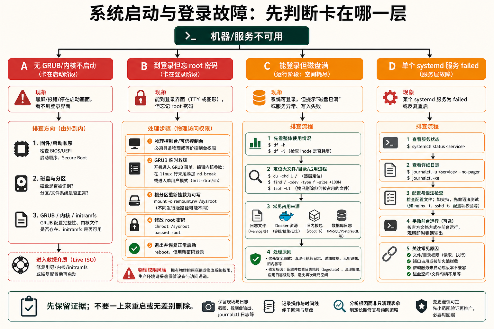

1命令分类速查表
文件操作 —— ls / cp / mv / rm / find / ln / tar
核心| 命令 | 常用选项 | 说明 |
|---|---|---|
ls -lah | -l长格式 -a含隐藏 -h人类可读 -t按时间 -S按大小 -r倒序 | 列出目录内容。最常用：ls -lah |
ls -l --time=atime | 显示访问时间而非修改时间 | 排查文件读取问题 |
cp -a src dst | -a归档模式(保留权限/时间) -r递归 -v显示过程 -u仅更新 -n不覆盖 | 复制文件或目录 |
cp -p | 保留权限、时间戳、所有者 | 备份时保持元数据一致 |
mv -i src dst | -i覆盖前确认 -n不覆盖 -v显示过程 -b备份目标 | 移动或重命名（同文件系统内是改 inode 指针，几乎瞬间完成） |
rm -rf dir | -r递归 -f强制 -i确认 -v显示过程 -d删空目录 | 危险！生产环境切勿 rm -rf / 或 rm -rf * |
find /path -name "*.log" -mtime +7 -delete | -name按名称 -type f/d/l按类型 -mtime n修改时间 -size +100M按大小 -user按所有者 -perm按权限 -exec cmd {} \;执行命令 -delete删除 | 搜索文件（Linux 最强文件查找工具） |
find . -type f -empty | 查找空文件 | 清理无用的空文件 |
find . -type f -perm 0777 | 查找权限为 777 的文件 | 安全检查 |
ln -s target linkname | -s符号链接 -f强制覆盖 -n不跟随已有链接 | 创建软链接（类似 Windows 快捷方式） |
ln target hardlink | 不加 -s 即硬链接 | 硬链接：同一 inode 的多个目录入口，删除原文件不影响硬链接 |
tar -czvf archive.tar.gz dir/ | -c创建 -x解压 -t查看 -zgzip -jbzip2 -Jxz -v详细 -f指定文件 -C指定目录 --exclude排除 | 打包/压缩（tape archive 的历史命名） |
tar -xzvf archive.tar.gz -C /dest/ | 解压到指定目录 | -C 必须在目标路径前加上 |
stat filename | 查看 inode 详细信息 | 显示文件大小、权限、时间戳、inode 号、链接数 |
file filename | 检测文件类型 | 不依赖扩展名——检测文件头魔数 |
du -sh dir/ | -s汇总 -h人类可读 --max-depth=N深度 | 查看目录占用磁盘空间 |
du -h --max-depth=1 / | sort -hr | head -10 | 找出根目录下最大的 10 个目录 | 磁盘清理第一步 |
head -n 20 file / tail -n 20 file | -n行数 -f跟踪（tail 专用） | 查看文件头/尾部 |
less file | 分页查看，/搜索 n/N跳转 g/G首尾 | 大文件查看利器，比 more 强大 |
硬链接（同一 inode）：删原文件不影响它，不能跨文件系统，不能链接目录。
软链接（符号链接，独立 inode 指向路径）：删原文件就断链（悬空链接），能跨文件系统和链接目录。
用户与权限 —— useradd / passwd / chmod / chown / umask
核心| 命令 | 常用选项 | 说明 |
|---|---|---|
useradd -m -s /bin/bash username | -m创建家目录 -s指定 shell -G附加组 -u指定 UID -d指定家目录 -e过期日期 | 添加用户 |
useradd -M -s /usr/sbin/nologin appuser | 创建无家目录、不能登录的系统用户 | 为服务创建专用账户 |
userdel -r username | -r同时删除家目录和邮件 | 删除用户 |
usermod -aG docker username | -aG追加到附加组（不用 -a 会覆盖已有组！） | 修改用户属性 |
passwd username | -l锁定 -u解锁 -e强制下次改密 -S状态 | 设置/修改密码（root 可改他人密码，普通用户只能改自己） |
groupadd groupname | -g指定 GID | 添加组 |
chmod 755 file | 数字模式：4读+2写+1执行。三位=所有者/组/其他。或 u/g/o/a +/- r/w/x | 修改文件权限 |
chmod u+x script.sh | 给所有者加执行权限 | 使脚本可执行 |
chmod -R 755 dir/ | 递归修改目录及其下所有文件 | 批量授权 |
chmod 1777 /tmp | 黏滞位（t）：只有文件所有者能删除 | 共享目录的安全设置 |
chmod u+s /usr/bin/passwd | SETUID（s）：执行时以文件所有者权限运行 | 普通用户改密码时临时获得 root 权限 |
chmod g+s dir/ | SETGID（s）：目录下新文件继承目录的组 | 共享工作目录 |
chown user:group file | -R递归 | 修改文件所有者和组 |
chown -R user:group dir/ | 递归修改整个目录树 | 批量改所有者 |
umask 022 | 默认值 022 → 新文件权限 644，新目录 755 | 控制新文件的默认权限掩码 |
getfacl file / setfacl -m u:user:rwx file | ACL 扩展权限：突破"所有者-组-其他"三级限制 | 给特定用户额外权限 |
su - username | -/-l/--login 完整登录环境 | 切换用户 |
sudo -u username cmd | -u指定用户 -i模拟初始登录 | 以其他用户身份执行命令 |
visudo | 安全编辑 /etc/sudoers（带语法校验） | 配置 sudo 权限 |
id username | 查看 UID、GID、所有组 | 验证用户身份 |
任何需要
chmod 777 才能跑的程序都是在掩盖错误。权限问题应该通过正确设置所有者和组来解决，不是给全世界开放。进程管理 —— ps / top / htop / kill / nohup / jobs
核心| 命令 | 常用选项 | 说明 |
|---|---|---|
ps aux | a所有用户 u用户格式 x含无终端的 -e所有进程 -f完整格式 -o自定义列 --sort=-%cpu排序 | 查看所有进程（BSD 风格） |
ps -ef | Unix 风格显示所有进程 | 显示 PID/PPID 父子关系 |
ps auxf | 树状显示进程关系 | 看清谁启动了谁 |
ps -eo pid,ppid,cmd,%mem,%cpu --sort=-%mem | head | 自定义列输出，按内存排序 | 脚本化进程查询 |
pstree -p | -p显示 PID -u显示用户 | 进程树（直观看到 fork 关系） |
top | 交互式：P按CPU M按内存 k杀进程 c显命令 1展开核心 | 实时进程监控 |
htop | 彩色 top：F3搜索 F5树状 F9杀 /搜索 | top 的现代化替代品 |
kill PID | 默认发送 SIGTERM(15) 优雅终止。信号：-9SIGKILL -1SIGHUP -19SIGSTOP -18SIGCONT | 向进程发送信号 |
kill -9 PID | 强制杀死（不留给进程清理机会） | 最后手段，先用 kill -15 尝试 |
killall -9 processname | 按进程名发信号 | 杀所有同名进程 |
pkill -f "pattern" | 按命令行模式匹配发信号 | 模糊匹配杀进程 |
nohup command & | nohup忽略 SIGHUP（终端关闭不影响） &放后台 | 脱机运行长时间任务 |
nohup command > output.log 2>&1 & | 后台运行并重定向所有输出 | 生产环境常见模式 |
jobs | 列出当前 shell 的后台任务 | 管理 & 启动的进程 |
fg %1 / bg %1 | fg前台 bg后台继续 | 前后台切换 |
pgrep -u username | 按用户筛选进程 PID | 脚本中查找进程 |
lsof -p PID | 列出进程打开的所有文件（含 socket、pipe） | 排错：看进程打开了哪些文件 |
lsof -i :80 | 查看哪个进程占用了 80 端口 | 端口冲突排查 |
fuser -v 80/tcp | 查看使用 80 端口的进程 | 比 lsof 更快，内建于 util-linux |
网络 —— ip / ss / ping / nmap / traceroute / curl / scp
核心| 命令 | 常用选项 | 说明 |
|---|---|---|
ip addr show | a 简写，显示所有接口的 IP 地址/MAC/状态 | 替代 ifconfig（已被废弃） |
ip link set eth0 up/down | 启用/禁用网卡 | 管理网络接口状态 |
ip route show | 显示路由表 | 替代 route -n |
ip neigh show | 显示 ARP 表（IP→MAC 映射） | 替代 arp -a |
ss -tlnp | -tTCP -l监听 -n数字格式 -p进程 -uUDP -a所有 -s统计 -e扩展 | 查看监听端口（替代 netstat） |
ss -antp state established | 只看已建立的 TCP 连接 | 查看活跃连接 |
ss -antp state time-wait | 查看 TIME_WAIT 状态的连接 | 排查端口耗尽问题 |
ping -c 4 host | -c发送次数 -i间隔 -s包大小 -W超时 | ICMP 连通性测试 |
ping -c 100 -i 0.2 host | grep loss | 快速发 100 个包看丢包率 | 网络质量快速评估 |
nmap -sS -p 1-65535 host | -sS半开扫描 -p端口范围 -sV服务版本 -OOS探测 -A全面 | 端口扫描与网络发现 |
nmap -sn 192.168.1.0/24 | Ping 扫描（存活主机发现） | 局域网设备发现 |
traceroute host | -n不解析域名 -m最大跳数 -p端口(默认UDP) -IICMP模式 | 追踪数据包路径 |
mtr host | traceroute + ping 组合，实时更新每跳延迟/丢包率 | 网络延迟排查最佳工具 |
curl -I https://example.com | -I只取响应头 -o输出到文件 -O远程文件名 -L跟随重定向 -k忽略SSL证书 -v详细 -X指定方法 -H自定义头 -dPOST数据 -u认证 -s静默 | HTTP/HTTPS 请求和下载 |
curl -s -o /dev/null -w "%{http_code}\n" url | 只输出 HTTP 状态码 | 健康检查脚本 |
curl -X POST -H "Content-Type: application/json" -d '{"key":"val"}' url | 发送 JSON POST 请求 | API 测试 |
wget -c url | -c断点续传 -r递归 -np不追父目录 -b后台 | 文件下载（支持递归抓站） |
scp file user@host:/path/ | -r递归 -P端口 -C压缩 -i密钥 -l限速 | 基于 SSH 的安全文件传输 |
rsync -avzP src/ user@host:dst/ | -a归档 -v详细 -z压缩 -P进度+断点续传 --delete删除目标多余文件 --exclude排除 | 增量同步（比 scp 智能得多） |
tcpdump -i eth0 port 80 -w capture.pcap | -i接口 port端口 host主机 -w写文件 -r读文件 -n不解析 -c个数 | 网络抓包 |
tcpdump -i any -nn 'tcp[tcpflags] & tcp-syn != 0' | 只抓 SYN 包（连接建立请求） | 分析连接尝试 |
磁盘与存储 —— lsblk / df / du / fdisk / mkfs / mount
核心| 命令 | 常用选项 | 说明 |
|---|---|---|
lsblk -f | -f显示文件系统/UUID -o自定义列 -a含空设备 -m权限 | 列出所有块设备（磁盘、分区）的树状结构 |
lsblk -o NAME,SIZE,TYPE,MOUNTPOINT,FSTYPE | 自定义显示列 | 快速了解磁盘布局 |
df -h | -h人类可读 -T显示类型 -iinode使用 -x tmpfs排除 | 查看文件系统磁盘空间使用 |
df -hT /data | 查看特定挂载点的文件系统类型和空间 | 确认挂载的文件系统类型 |
du -sh dir/* | sort -hr | head | 找出目录下最大的子项 | 磁盘清理的核心命令 |
du -ah / --max-depth=1 --exclude=/proc --exclude=/sys 2>/dev/null | sort -hr | head | 找根目录下最大的目录（排除虚拟文件系统） | 磁盘满了，先跑这个 |
fdisk -l /dev/sda | 查看磁盘分区表 | 确认分区布局 |
fdisk /dev/sdb | 交互式：n新建 d删除 p打印 w写入 q退出 | MBR 分区工具 |
parted /dev/sdb print | 查看分区（支持 GPT） | GPT 分区管理（> 2TB 磁盘必须用 GPT） |
mkfs.ext4 -L mydata /dev/sdb1 | -L标签 -m保留块百分比 -b块大小 | 格式化为 ext4 |
mkfs.xfs -f /dev/sdb1 | -f强制覆盖 -L标签 | 格式化为 XFS（数据库推荐） |
mount /dev/sdb1 /mnt/data | -t指定类型 -o选项 -a挂载 fstab 中所有 | 挂载文件系统 |
mount -o remount,noatime / | 不卸载就修改挂载选项 | 在线调整挂载参数 |
umount -l /mnt/data | -l懒卸载（先断开，等不忙了再完成） -f强制 | 卸载文件系统（支持强制） |
blkid | 查看所有设备的 UUID 和文件系统 | 写 fstab 时需要 UUID |
swapon --show | 查看 swap 使用情况 | 确认哪些设备做了 swap |
dd if=/dev/sda of=/backup/sda.img bs=4M status=progress | if输入 of输出 bs块大小 count块数 status=progress进度 | 底层磁盘拷贝（裸设备备份/恢复） |
dd if=/dev/zero of=/swapfile bs=1M count=2048 | 创建 2GB 的 swap 文件 | mkswap /swapfile && swapon /swapfile 激活 |
系统信息 —— uname / uptime / free / hostname / dmesg / journalctl
核心| 命令 | 常用选项 | 说明 |
|---|---|---|
uname -a | -a全部 -r内核版本 -m架构 -n主机名 | 查看系统基本信息 |
hostnamectl | set-hostname name 设置 set-icon-name 设置图标 | 查看和设置主机名（systemd 系统） |
uptime | 运行时间 + 用户数 + 平均负载 | 快速了解系统是否过载 |
free -h | -h人类可读 -m/-gMB/GB -s N每N秒刷新 | 内存使用概览 |
dmesg -T | -T人类可读时间戳 -H人类可读+彩色 -w跟踪 | 内核环形缓冲区（启动日志、驱动加载、错误） |
dmesg -T | grep -i error | 只看错误信息 | 快速排查硬件/驱动故障 |
journalctl -xe | -x扩展说明 -e跳到末尾 -f跟踪 -u service按服务 -b本次启动 --since today时间 -k内核 -p err优先级 | 查看 systemd journal 日志（现代 Linux 的标准日志工具） |
journalctl -u nginx -f | 实时跟踪 nginx 的日志 | 服务排错 |
journalctl -b -1 -p err | 查看上次启动的所有错误 | 排查为什么上次重启了 |
journalctl --disk-usage | 查看日志占用磁盘空间 | 日志轮转检查 |
lscpu | CPU 架构、核心数、缓存、频率 | 了解 CPU 能力 |
lspci -v | 列出 PCI 设备（显卡、网卡、磁盘控制器） | 硬件清单 |
lsusb | 列出 USB 设备 | 排查外设问题 |
lshw -short | -short简洁 -class disk按类别 | 硬件完整信息 |
timedatectl | set-timezone Asia/Shanghai set-ntp true | 时间和时区管理 |
localectl | set-locale LANG=zh_CN.UTF-8 | 语言和区域设置 |
cat /proc/cpuinfo / cat /proc/meminfo | 详细的 CPU/内存信息 | 比 free 输出更详细 |
cat /proc/loadavg | 1/5/15分钟平均负载 + 运行进程/总进程 | 脚本读取负载 |
包管理 —— apt / dnf / snap / 源码编译
核心| 操作 | Debian/Ubuntu (apt) | RHEL/Fedora (dnf) |
|---|---|---|
| 更新包索引 | apt update | dnf check-update |
| 升级所有包 | apt upgrade / apt full-upgrade | dnf upgrade |
| 搜索包 | apt search keyword | dnf search keyword |
| 安装包 | apt install pkg | dnf install pkg |
| 删除包 | apt remove pkg / apt purge pkg（含配置） | dnf remove pkg |
| 查看包信息 | apt show pkg | dnf info pkg |
| 列出已安装 | apt list --installed | dnf list installed |
| 查看包提供的文件 | dpkg -L pkg | rpm -ql pkg |
| 文件属于哪个包 | dpkg -S /path/file | rpm -qf /path/file |
| 查找提供命令的包 | apt-file search bin/cmd | dnf provides */bin/cmd |
| 清理缓存 | apt clean / apt autoremove | dnf clean all / dnf autoremove |
| 添加仓库 | add-apt-repository ppa:... | dnf config-manager --add-repo url |
| 安装本地 .deb/.rpm | dpkg -i pkg.deb && apt install -f | dnf localinstall pkg.rpm |
# 源码编译安装三步骤
./configure --prefix=/usr/local/myapp # 检测环境，生成 Makefile
make -j$(nproc) # 编译（-j 使用所有核心并行）
make install # 安装到 --prefix 指定的目录
# 常用 configure 选项
--prefix=PATH # 安装路径
--enable-FEATURE # 启用可选功能
--disable-FEATURE # 禁用功能
--with-PACKAGE # 使用外部库
--without-PACKAGE # 不使用外部库
CFLAGS="-O2 -march=native" # 优化编译参数2核心配置文件速查表
各子系统核心配置文件 —— 位置、用途、关键字段
必备| 配置文件 | 用途 | 关键字段/格式 |
|---|---|---|
/etc/passwd | 用户账户信息 | username:x:UID:GID:comment:home:shell（密码显示 x，实际在 shadow） |
/etc/shadow | 加密密码和过期策略 | username:$encrypted$:lastch:min:max:warn:inactive:expire |
/etc/group | 组信息 | groupname:x:GID:member1,member2 |
/etc/sudoers | sudo 权限配置（必须用 visudo 编辑） | user ALL=(ALL:ALL) NOPASSWD:ALL |
/etc/ssh/sshd_config | SSH 服务端配置 | Port 22 PermitRootLogin no PasswordAuthentication no PubkeyAuthentication yes |
/etc/ssh/ssh_config | SSH 客户端配置 | Host * ServerAliveInterval 60 |
/etc/fstab | 文件系统挂载表（开机自动挂载） | UUID=xxx /mnt ext4 defaults,noatime 0 2（最后两列：dump 备份 / fsck 顺序） |
/etc/hosts | 本地 DNS 解析（优先于 DNS 服务器） | 192.168.1.100 myserver.local myserver |
/etc/resolv.conf | DNS 解析器配置 | nameserver 8.8.8.8 search example.com（systemd 系统由 systemd-resolved 管理） |
/etc/crontab | 系统级 cron 任务表 | 分 时 日 月 星期 用户 命令（外加 /etc/cron.d/ /etc/cron.{daily,hourly,weekly,monthly}/） |
/etc/systemd/system/ | systemd 服务单元文件（自定义） | [Unit] [Service] [Install] 三段式 |
/usr/lib/systemd/system/ | 包管理器安装的 systemd 单元（不要直接修改） | 用 systemctl edit unit 创建 override |
/etc/hostname | 主机名文件 | 单行文本，或通过 hostnamectl set-hostname 设置 |
/etc/sysctl.conf | 内核运行时参数（开机加载） | net.ipv4.ip_forward=1 vm.swappiness=10 |
/etc/security/limits.conf | 用户/组的资源限制 | username soft nofile 65536 username hard nofile 65536 |
/etc/default/grub | GRUB 引导器配置 | GRUB_CMDLINE_LINUX="quiet splash" 修改后须 update-grub |
/etc/nsswitch.conf | 名称服务切换顺序 | hosts: files dns 决定了先用 /etc/hosts 还是 DNS |
/etc/profile ~/.bashrc ~/.profile | Shell 环境配置 | 登录 shell 用 profile，交互非登录用 bashrc |
/etc/environment | 系统级环境变量 | PATH=/usr/local/bin:/usr/bin:/bin（所有用户全局生效） |
/etc/rsyslog.conf /etc/rsyslog.d/ | 系统日志守护进程配置 | 决定日志写入哪个文件 |
/etc/logrotate.conf /etc/logrotate.d/ | 日志轮转策略 | daily rotate 7 compress missingok |
systemd 服务单元模板
# /etc/systemd/system/myapp.service
[Unit]
Description=My Application
After=network.target
[Service]
Type=simple
User=appuser
Group=appgroup
WorkingDirectory=/opt/myapp
ExecStart=/opt/myapp/bin/myapp --config /etc/myapp/config.yml
ExecReload=/bin/kill -HUP $MAINPID
Restart=on-failure
RestartSec=5
LimitNOFILE=65536
EnvironmentFile=-/etc/myapp/env
# 安全加固
PrivateTmp=yes
NoNewPrivileges=yes
ProtectSystem=strict
ReadWritePaths=/var/log/myapp /var/lib/myapp
ProtectHome=yes
[Install]
WantedBy=multi-user.target
# 启用服务:
# systemctl daemon-reload # 重读单元
# systemctl enable --now myapp # 开机启动 + 立即运行

3快捷键速查表
终端与 Shell 快捷键 —— 让你的手不离开键盘
核心| 快捷键 | 作用 | 使用场景 |
|---|---|---|
Ctrl + C | 发送 SIGINT(2) 中断信号 | 终止正在运行的命令（最常用的快捷键） |
Ctrl + D | 发送 EOF（文件结束符） | 退出当前 shell / 退出交互式程序（如 python repl） |
Ctrl + Z | 发送 SIGTSTP(20) 暂停信号 | 暂停前台进程（用 fg 恢复，bg 放后台继续） |
Ctrl + L | 清屏 | 等同于 clear 命令，但保留滚动缓冲区（终端上为 Ctrl+Shift+L） |
Ctrl + R | 反向搜索历史命令 | 输入关键词查找以前执行过的命令，再按 Ctrl+R 继续往前搜 |
Ctrl + R（再次） | 继续向前（更早的历史）搜索 | 多次按键循环查找 |
Ctrl + S | 正向搜索历史（默认被终端流控占用） | 需先在终端禁用流控：stty -ixon |
Ctrl + A | 光标跳到行首 | 修改一长串命令的开关位置 |
Ctrl + E | 光标跳到行尾 | 在命令末尾添加内容 |
Ctrl + U | 删除光标前的内容 | 快速清空当前行 |
Ctrl + K | 删除光标后的内容 | 删除命令的后半截 |
Ctrl + W | 删除光标前的一个词 | 快速修改参数 |
Alt + Backspace | 删除光标前的一个词（另一方式） | 等同于 Ctrl+W |
Alt + F / Alt + B | 向前/向后移动一个词 | 在长命令中快速跳转 |
Ctrl + T | 交换光标前后的两个字符 | 修正手误（如 sl → ls） |
Alt + T | 交换光标前后的两个词 | 调整命令参数顺序 |
Ctrl + _（或 Ctrl + /） | 撤销上一次编辑 | 撤销误操作 |
Ctrl + X + E | 在编辑器中打开当前命令行 | 打开 $EDITOR 编辑长命令，保存退出后自动执行 |
!! | 执行上一条命令 | sudo !! —— 以 sudo 重新执行上一条命令（超级常用） |
!$ | 上一条命令的最后一个参数 | mkdir /long/path/name → cd !$ 进入刚创建的目录 |
!* | 上一条命令的所有参数（不含命令本身） | 重用上一条命令的参数 |
!string | 执行最近一条以 string 开头的命令 | !ssh 重新执行最近一条 ssh 命令 |
Ctrl + P / Ctrl + N | 上一条/下一条历史命令（等同于上下箭头） | 浏览历史 |
Alt + . | 插入上一条命令的最后一个参数 | 快速复用路径名或文件名 |
vim / vi 基本操作速查
| 操作 | 命令 | 说明 |
|---|---|---|
| 进入插入模式 | i(光标前) a(光标后) o(新行) I(行首) A(行尾) | 按 Esc 返回普通模式 |
| 移动光标 | h/j/k/l 左/下/上/右 w/b 下/上一个词 0/$ 行首/尾 gg/G 文件首/尾 | 强迫自己不用方向键 |
| 删除 | x删字符 dd删行 dw删词 d$删到行尾 D同上 | 删除的内容默认存入剪贴板（寄存器） |
| 复制/粘贴 | yy复制行 yw复制词 p/P粘贴到后/前 | 用 "+y 复制到系统剪贴板 |
| 撤销/重做 | u撤销 Ctrl+r重做 | 支持多级撤销 |
| 查找/替换 | /pattern搜索 n/N下一个 :%s/old/new/g全局替换 :%s/old/new/gc确认替换 | 搜索大小写敏感，\c 加在模式后忽略大小写 |
| 保存/退出 | :w保存 :q退出 :wq保存退出 :q!强制不保存退出 | ZZ 等同于 :wq |
| 可视模式 | v字符选择 V行选择 Ctrl+v块选择 | 选择后可按 d删除 y复制 |
在终端中不小心按下 Ctrl+S，终端会停止输出——看起来像"卡死了"。这其实是 XON/XOFF 流控机制的历史遗留：Ctrl+S = 暂停输出，Ctrl+Q = 恢复输出。按
Ctrl+Q 即可恢复。在 .bashrc 中添加 stty -ixon 可永久禁用它。4进程信号速查表
Linux 信号 —— 与进程通信的唯一方式
必备信号是 Linux 内核与进程、进程与进程之间通信的"通知机制"。每个信号有一个编号和一个名称。进程可以注册信号处理器（handler），也可以选择忽略（SIGKILL 和 SIGSTOP 除外——这两者不可被捕获或忽略）。
| 编号 | 信号名 | 默认行为 | 触发方式 | 典型用途 |
|---|---|---|---|---|
| 1 | SIGHUP | 终止 | 终端挂断 / kill -1 PID | 重新加载配置（Nginx、systemd 等服务用此信号触发 reload） |
| 2 | SIGINT | 终止 | 键盘 Ctrl+C | 中断前台进程（用户主动停止） |
| 3 | SIGQUIT | 终止 + core dump | 键盘 Ctrl+\ | 退出并生成 core dump（调试用） |
| 9 | SIGKILL | 终止 | kill -9 PID | 内核强制杀死——进程无任何机会反抗或清理 |
| 10 | SIGUSR1 | 终止 | kill -10 PID | 用户自定义信号 1（如 Nginx 用 USR1 重新打开日志文件） |
| 11 | SIGSEGV | 终止 + core dump | 无效内存访问（段错误） | 程序 bug：访问 NULL 指针、栈溢出、缓冲区溢出 |
| 12 | SIGUSR2 | 终止 | kill -12 PID | 用户自定义信号 2（如 Nginx 用 USR2 平滑升级） |
| 15 | SIGTERM | 终止 | kill PID（默认） | 优雅终止——给进程清理资源的机会（关闭连接、写回数据） |
| 17 | SIGCHLD | 忽略 | 子进程状态改变 | 父进程被告知子进程退出了（避免僵尸进程） |
| 18 | SIGCONT | 继续运行 | kill -18 PID | 恢复被 SIGSTOP/SIGTSTP 暂停的进程 |
| 19 | SIGSTOP | 暂停 | kill -19 PID | 暂停进程（不可被捕获/忽略，只能等 SIGCONT） |
| 20 | SIGTSTP | 暂停 | 键盘 Ctrl+Z | 终端暂停信号（可被捕获，vim 就捕获了它） |
信号的使用场景
# 优雅停止（让进程自己清理）
kill 1234 # 等同于 kill -15 1234
# 等价于:
kill -TERM 1234
# 强制杀死（最后手段）
kill -9 1234 # SIGKILL —— 内核直接销毁进程
# 重新加载配置（很多守护进程支持）
kill -HUP $(pgrep nginx) # SIGHUP(1)
# 等价于:
systemctl reload nginx
nginx -s reload
# 暂停/恢复进程
kill -STOP 1234 # 暂停
kill -CONT 1234 # 恢复
# Nginx 平滑升级（USR2 启动新 master，WINCH 优雅关闭旧 worker）
kill -USR2 $(cat /var/run/nginx.pid) # 启动新版本的 master
kill -WINCH $(cat /var/run/nginx.pid.oldbin) # 关闭旧 workerkill -9 是暴力手段——内核直接回收进程的内存、关闭文件描述符、释放锁，进程完全不知情。数据库可能在写入一半时被杀，导致数据损坏。kill -15 (SIGTERM) 是礼貌做法——通知进程"请你自己退出"，进程可以在信号处理器中关闭连接、刷写缓存、删除临时文件。永远先用 kill -15，等几秒无效后再用 kill -9。
5系统启动与登录问题排障清单
场景一：忘了 root 密码 —— 进入单用户模式重置
必备GRUB 单用户模式重置密码（传统 init 系统）
# 1. 重启系统，在 GRUB 菜单出现时按 'e' 编辑启动项
# 2. 找到 linux 开头的行，在行尾添加:
# single (或 init=/bin/bash)
# 3. 按 Ctrl+X 或 F10 启动
# 4. 进入 root shell 后:
mount -o remount,rw /
passwd root
# 输入新密码
reboot
# 如果加了 init=/bin/bash:
mount -o remount,rw /
passwd root
exec /sbin/init # 继续正常启动systemd 系统重置 root 密码
# 1. GRUB 菜单按 'e'，找到 linux 行，行尾添加:
# rd.break (RHEL/Fedora/CentOS)
# init=/bin/bash (Debian/Ubuntu)
# RHEL 方式 (rd.break):
# 2. 启动后进入 emergency shell
mount -o remount,rw /sysroot
chroot /sysroot
passwd root
touch /.autorelabel # SELinux 需要重新打标签
exit
reboot
# Debian/Ubuntu 方式 (init=/bin/bash):
mount -o remount,rw /
passwd root
sync
reboot -f # -f 跳过可能卡住的 systemd 关机流程场景二：磁盘满了 —— 无法登录或服务异常
必备一步步找出占满磁盘的元凶
# 第一步：全局概览
df -h
# 找 Use% 接近 100% 的分区
# 第二步：定位大目录
du -h --max-depth=1 / | sort -hr | head -10
# 第三步：进入最大的目录，继续深入
du -h --max-depth=1 /var | sort -hr | head -10
# 第四步：找最大的 20 个文件（全局扫描，可能较慢）
find /var -type f -size +100M -exec ls -lh {} \; 2>/dev/null | sort -k5 -hr | head -20
# 常见占满磁盘的元凶:
# - /var/log/ 下的超大日志（syslog、kern.log、journal/）
# - /tmp 下的临时文件
# - Docker overlay2 目录（/var/lib/docker/overlay2/）
# - 未清理的旧内核（/boot/）
# - 数据库的 binlog（MySQL）/ WAL（PostgreSQL）
# - 未轮转的日志（对 logrotate 配置不当）快速的磁盘清理策略
# 清理日志
journalctl --vacuum-size=500M # systemd journal 只保留 500MB
find /var/log -type f -name "*.log" -mtime +30 -delete # 删 30 天前的日志
: > /var/log/syslog # 清空文件但不删除（保持 fd 有效）
# 清理包缓存
apt clean # Debian/Ubuntu
dnf clean all # RHEL/Fedora
# 清理 Docker
docker system prune -a -f
# 清理旧内核
apt autoremove --purge # Debian/Ubuntu
dnf remove $(dnf repoquery --installonly --latest-limit=-2) # RHEL/Fedora
# 清理临时文件
find /tmp -type f -atime +7 -delete
rm -rf /tmp/*
# 查看被删除但仍被进程占用的文件（lsof 显示的 deleted 文件）
lsof +L1 | grep deleted
# 这些文件虽然被 rm 了，但进程还持有 fd → 磁盘空间不释放！
# 解决方法: 重启该进程或截断 fd (truncate -s 0 /proc/PID/fd/N)场景三：服务启动失败 —— systemctl 排错流程
必备标准的服务排错三步法
# 第一步：查看服务状态
systemctl status nginx
# 输出示例:
# ● nginx.service - A high performance web server
# Loaded: loaded (/lib/systemd/system/nginx.service; enabled)
# Active: failed (Result: exit-code) since Mon 2026-07-31 10:30:00 CST; 2min ago
# ^^^^ ^^^^^^^^^^^^^^^^^^^^^^^^^^
# 状态 失败原因（退出码非零）
# Process: 12345 ExecStart=/usr/sbin/nginx (code=exited, status=1/FAILURE)
# ^^^^^^^^^^^^^^^^^^^^^^^^^^^^^^
# 退出码 1 → 配置文件可能有错误
# 第二步：查看详细日志
journalctl -u nginx -xe # 最近的服务日志，扩展说明
journalctl -u nginx --since "5 minutes ago" # 最近 5 分钟的日志
# 第三步：手动运行启动命令（看原始错误）
# 从 systemctl status 输出中找到 ExecStart 的命令
sudo -u www-data nginx -t # 测试配置文件
sudo -u www-data nginx # 前台运行（直接看到错误输出）常见服务启动失败原因速查
| 症状 | 可能原因 | 排查命令 |
|---|---|---|
| Active: failed (exit-code) | 配置文件语法错误 | 用服务的配置测试命令（如 nginx -t、sshd -t） |
| Active: failed (timeout) | 服务启动超时 | 看 startup.log，可能等待资源（如数据库连接） |
| Active: failed (core-dump) | 程序崩溃（段错误） | coredumpctl list 查看 core dump |
| Active: activating (start) | 卡在启动阶段 | strace -p PID 看卡在哪个系统调用 |
| 权限错误 Permission denied | 用户/组不对，或文件权限错误 | ls -la 检查文件所有者，id serviceuser 检查用户 |
| 端口已占用 Address already in use | 其他进程在用同一个端口 | ss -tlnp | grep PORT 或 lsof -i :PORT |
| 依赖服务未启动 | 数据库/缓存/消息队列没起来 | systemctl status dependency-service |
| 磁盘空间不足 No space left on device | 磁盘满或 inode 耗尽 | df -h 和 df -i 检查 |
用 strace 跟踪启动失败的进程
# 有时日志信息不够——用 strace 跟踪进程的系统调用
# 先修改 service 的 ExecStart，在前面加上 strace:
# ExecStart=/usr/bin/strace -f -o /tmp/nginx.strace /usr/sbin/nginx
# 或者手动前台运行:
strace -f -o /tmp/debug.strace nginx -g "daemon off;"
# 分析 strace 输出，找最后一个失败的系统调用:
grep -E "= -1 E" /tmp/debug.strace | tail -20
# 例如:
# open("/etc/nginx/sites-enabled/missing.conf", O_RDONLY) = -1 ENOENT
# → 你 include 了一个不存在的配置文件
6网络故障排查速查表
从链路层到应用层的完整排查链
必备网络排障六步法（自底向上，逐层排查）
第一步：链路层 —— 网线/网卡是否正常
命令：ip link show ethtool eth0 dmesg | grep eth
查：LINK 状态是否为 UP？速度/双工是否正确？是否有 CRC 错误？
ethtool eth0 | grep "Link detected" → 应为 yes
第二步：IP 层 —— 地址和路由是否正确
命令：ip addr show ip route show
查：IP 地址是否配置？子网掩码是否对？默认网关是否有？
ip route | grep default → 必须有默认路由
第三步：连通性 —— 能不能到达目标
命令：ping -c 4 target mtr target
查：丢包率？延迟是否正常？哪一跳开始不通？
先 ping 网关，再 ping 外网——逐步缩小范围
第四步：端口 —— 目标服务是否在监听
命令：telnet host port nc -zv host port nmap -p port host
查：端口是否可达？防火墙/安全组是否拦截？
ss -tlnp | grep port 先在目标机器上确认服务在监听
第五步：DNS —— 域名能否解析
命令：nslookup domain dig domain host domain
查：A 记录是否正确？DNS 服务器是否可达？缓存是否过期？
dig +short domain @8.8.8.8 绕过本地 DNS 测试
第六步：应用层 —— HTTP 返回是否符合预期
命令：curl -v https://host curl -I host wget --debug host
查：HTTP 状态码？响应头？响应体内容？SSL 证书是否有效？
curl -w "\nhttp_code:%{http_code}\ntime_total:%{time_total}s\n" host
常用网络诊断命令速查
| 场景 | 命令 | 说明 |
|---|---|---|
| Ping 看通不通 | ping -c 4 -W 2 host | 发送 4 个包，等待 2 秒超时 |
| 追踪路由路径 | traceroute -n host | 查看数据包每一跳（-n 不解析域名） |
| 路由可视化 | mtr -n host | 实时刷新每跳延迟和丢包率（结合 ping + traceroute 优点） |
| 检测端口是否开放 | nc -zv host 80 或 nc -zv host 22 | 不发送数据，仅测试 TCP 连接（-z 不发送数据，-v 详细） |
| 检测端口（传统方式） | telnet host 80 | 连接端口（如一直 Connecting，说明不通） |
| 端口扫描 | nmap -p 1-1000 host | 扫前 1000 个端口 |
| DNS 正向解析 | nslookup example.com | Windows/Linux 通用，简单直接 |
| DNS 详细查询 | dig example.com dig +short example.com dig -x 8.8.8.8（反向解析） | 比 nslookup 输出更详细（Linux 首选） |
| HTTP 状态码 | curl -s -o /dev/null -w "%{http_code}" host | 脚本中检查服务健康 |
| HTTP 完整响应 | curl -v https://host | 显示 SSL 握手、请求头、响应头、响应体 |
| 测量请求耗时 | curl -w "\ntime_namelookup:%{time_namelookup}\ntime_connect:%{time_connect}\ntime_total:%{time_total}\n" -o /dev/null -s host | DNS 解析时间、TCP 连接时间、总时间 |
| 看端口监听 | ss -tlnp | TCP 监听端口 + 进程名 |
| 看所有连接 | ss -antp | 所有 TCP socket 状态 |
| 看连接统计 | ss -s | TCP/UDP/RAW 各状态的汇总计数 |
| 查看 IP 配置 | ip addr show | 每个网卡的 IP 地址、MAC、状态 |
| 查看 ARP 表 | ip neigh show | IP-MAC 映射（局域网内谁是谁） |
| 查看路由表 | ip route show | 系统如何选择出口 |
| 抓包分析 | tcpdump -i any -nn host 10.0.0.1 and port 80 | 抓特定主机特定端口的包，存为 pcap 文件用 Wireshark 分析 |
| 查看网卡错误 | ip -s link show eth0 | RX/TX 的 error、dropped、overrun 计数 |
| 测试带宽 | iperf3 -s（服务端）iperf3 -c host（客户端） | 两台机器间实际网络吞吐测试 |
| 持续 Ping 看稳定性 | ping -i 0.2 -c 200 host | 每秒 5 个包发 200 个，统计丢包率和延迟抖动 |
网络排障的黄金命令组合
# 一次性检查所有网络层面（复制粘贴到终端）
echo "=== 网卡状态 ===" && ip link show && echo
echo "=== IP 地址 ===" && ip addr show | grep -E "inet " && echo
echo "=== 路由表 ===" && ip route show && echo
echo "=== DNS 配置 ===" && cat /etc/resolv.conf && echo
echo "=== 监听端口 ===" && ss -tlnp && echo
echo "=== 防火墙规则 ===" && iptables -L -n -v --line-numbers 2>/dev/null || echo "需要 root"
echo "=== 网关 Ping ===" && GATEWAY=$(ip route | grep default | awk '{print $3}')
ping -c 3 -W 1 "$GATEWAY" 2>/dev/null && echo "网关可达" || echo "网关不可达!"
echo "=== 外网 Ping ===" && ping -c 3 -W 1 8.8.8.8 2>/dev/null && echo "外网可达" || echo "外网不可达!"
echo "=== DNS 解析测试 ===" && nslookup google.com 2>/dev/null || echo "DNS 解析失败"遇事不决先 ping 网关（确认内部网络正常），再 ping 8.8.8.8（确认能出外网），然后 nslookup（确认 DNS 解析正常），最后 curl 目标 URL（确认应用层通讯正常）。绝不要跳过步骤——90% 的误判都是因为跳过了某一层。
注解
ARP · Address Resolution Protocol 地址解析协议
GDB · GNU Debugger GNU 调试器
HTTPS · Hypertext Transfer Protocol Secure 安全超文本传输协议
SSL · Secure Sockets Layer 安全套接层